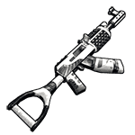
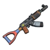
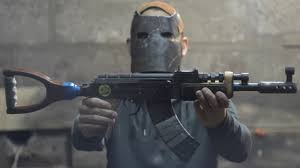

M249 в игре Rust
Создатель Rob Smith
Posted on May 15, 2023 at 12:00 PM
Итак, уважаемые новички, сегодня разберёмся с вопросом – «Как скрафтить калаш в Rust». С прежней системой крафта, которая существовала два – три года назад, не было рецептов и верстаков. Достаточно было иметь лишь все нужные для сборки компоненты в инвентаре, и вещь собиралась в любом месте. Сегодня так не получится. Чем реже в игре встречается предмет, который вы собираетесь создать, тем выше уровень верстака он требует. Так, калаш нуждается в Workbench level 3. Только, стоя рядом с ним, вы сможете создать самое мощное автоматическое оружие в Rust.
Вам понадобится металл высокого качества, пружины, шестерёнки, дерево и корпус винтовки. Ваш вопрос, думаю, будет только в том, где взять последнюю составляющую. Корпуса иногда попадаются в зелёных ящиках, которые в свою очередь лучше искать на монументах. В других местах их просто нет. Если видели хоть раз огромное заброшенное нефтехранилище в виде большого шара, то советую вам регулярно залазить на его вершину. Там стабильно лежат четыре зелёных ящика. Однако торопиться не стоит. Если вы играете на классическом сервере, вы не представляете, сколько времени понадобится, чтобы создать хотя бы верстак третьего уровня. Каждый из них создаётся только с помощью предыдущей ступени. Второй с помощью первого, соответственно, и третий за счёт второго верстака.
В общей сложности на всё вы потратите 1750 единиц металлолома. На их поиски у вас уйдёт часов 8 игры. Дальше нужно как-то добыть рецепт. Либо мы находим образец автомата и изучаем его на столе для исследований, либо проводим случайные эксперименты на Workbench level 3.
Для проведения одного эксперимента нужна тысяча единиц скрапа (металлолома). Далеко не факт, что рецепт калаша вы получите сразу, потому что они вылетают в случайном порядке. Рано или поздно вы путём проведения случайных экспериментов изучите все предметы, создающиеся на третьем верстаке.
Как скрафтить калаш в Rust. Итоги В общем, нужен рецепт, верстак третьего уровня и компоненты. Рецепт можно выбить случайным экспериментом или путём изучения одного экземпляра автомата на столе для исследований. Есть ещё вариант попросить других игроков обменяться с вами на серу или что-то ещё, если на сервере будут счастливые обладатели калаша. На худой конец существует донат. Если нет автомата, но две штуки С4, можете попробовать взорвать танк. Из него иногда вываливаются автоматы.